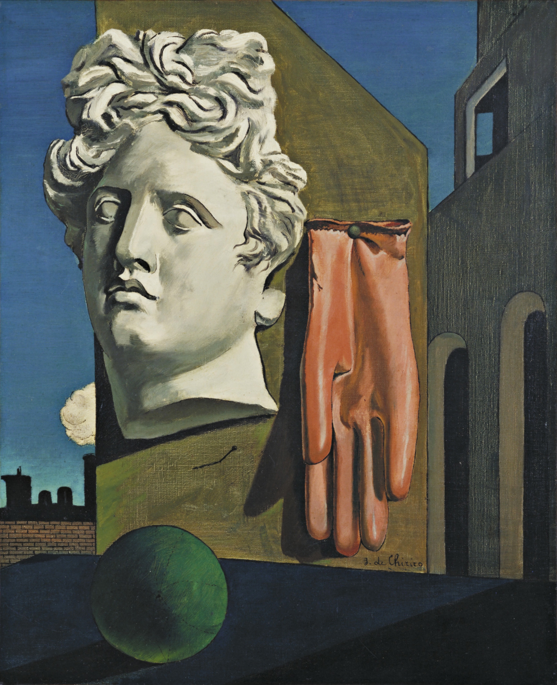
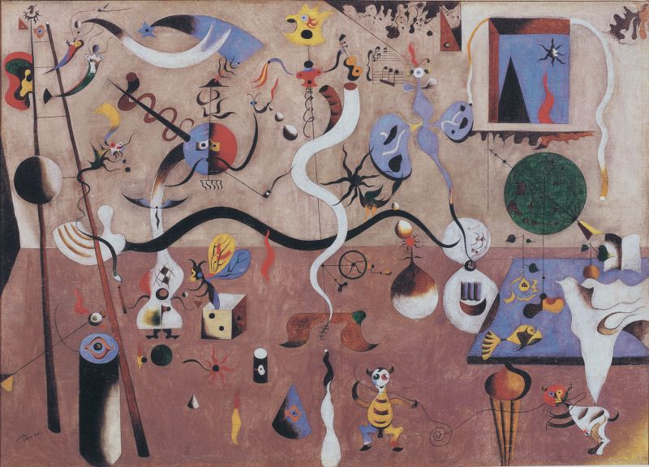
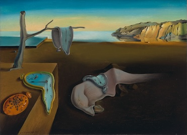
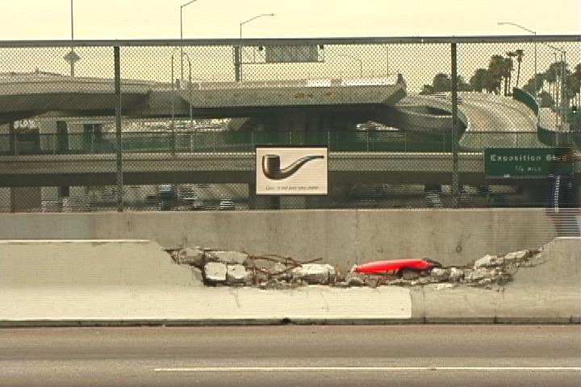

다다 · 레디메이드
초현실주의는 단순히 기괴하거나 꿈같은 그림을 뜻하지 않는다. 제1차 세계대전 이후 많은 예술가들은 이성·합리성·문명이 인간을 더 나은 세계로 이끈다는 믿음에 의문을 품었다. 다다가 기존 문화와 이성을 파괴하려 했다면, 초현실주의는 그 다음 단계에서 꿈·무의식·우연·욕망·자동기술을 통해 의식적인 이성이 통제하지 않는 또 다른 현실에 접근하려 했다.
상세 학습
초현실주의는 꿈과 무의식을 해방해 합리적 현실을 넘어서는 관계를 만들려 한 문학·미술 운동이다. 자동기술과 정밀한 환영 회화는 외형이 반대처럼 보여도 의식의 통제를 흔든다는 목표를 공유한다.
다다의 우연과 반합리성을 이어받아 무의식 이론과 집단적 방법으로 조직했고, 상징주의보다 사물의 충돌과 심리적 자동성을 더 급진적으로 사용했다.
흔한 오해: 이상한 꿈을 사실적으로 그리면 모두 초현실주의가 아니다. 선언, 집단 활동, 자동기술과 무의식에 대한 역사적 방법이 범주의 핵심이다.
눈앞의 현실뿐 아니라 꿈·기억·욕망·환상도 예술의 현실이 된다.
논리적 사고가 억압하는 무의식적 이미지와 욕망을 드러내려 한다.
자동기술, 우연한 얼룩, 프로타주 등으로 의식적 통제를 줄인다.
익숙한 사물을 전혀 어울리지 않는 관계에 배치한다.
보이는 세계보다 인간 정신의 숨은 층위를 탐구한다.
꿈을 무의식적 욕망과 갈등이 드러나는 통로로 해석한다.
유럽의 합리주의와 진보에 대한 신뢰가 큰 충격을 받는다.
카바레 볼테르를 중심으로 반예술·우연·부조리의 실험이 시작된다.
브르통과 수포 등이 의식적 검열을 줄이는 자동기술 글쓰기를 실험한다.
앙드레 브르통이 초현실주의를 ‘순수한 심리적 자동기술’과 연결해 정식화한다.
미로·에른스트·달리·마그리트 등이 서로 다른 방식으로 무의식과 꿈을 시각화한다.

의식적 계획을 줄이고 자동적인 선과 형태를 통해 무의식의 흐름을 드러낸다.
정밀하고 사실적인 기법으로 논리적으로 불가능한 장면을 그려 현실 자체를 의심하게 한다.
프로타주·콜라주·데칼코마니 같은 기법으로 예측하지 못한 이미지를 발견한다.




| 비교 항목 | 다다 | 미로·마송 | 달리·마그리트 | 에른스트 |
|---|---|---|---|---|
| 핵심 태도 | 기존 예술과 이성의 파괴 | 자동성과 무의식 | 꿈·연상·개념의 낯섦 | 우연한 이미지 발견 |
| 방법 | 레디메이드·우연·조롱 | 자동 드로잉·자유 형태 | 정밀 묘사 + 비논리적 결합 | 프로타주·콜라주·데칼코마니 |
| 목표 | 예술 제도의 파괴 | 의식 이전의 정신 흐름 | 현실과 꿈의 경계 붕괴 | 의식이 만들지 않은 이미지 발견 |
| 한 문장 | “규칙을 믿지 않는다.” | “생각하기 전에 그린다.” | “불가능한 것을 현실처럼 보이게 한다.” | “우연 속에서 이미지를 찾는다.” |
작품 이미지는 자료 폴더의 로컬 이미지 파일을 사용하도록 구성했다.
초현실주의는 꿈·무의식·우연·욕망을 이성의 통제에서 해방하려는 공통 목표를 공유했지만, 파리 밖에서는 지역의 언어·정치·신화와 결합하며 다양한 형태로 발전했다.
| 국가·지역·세부 사조 | 지역적 특징 | 대표 화가·제작자 |
|---|---|---|
| 프랑스 — 자동기술적 초현실주의 |
| 호안 미로 |
| 스페인·벨기에 — 환영적 초현실주의 |
| 살바도르 달리 |
초현실주의는 이상한 사물을 그리는 취향이 아니라, 꿈과 현실, 의식과 무의식, 말과 이미지의 관계를 새로 조직하려는 운동이다. 다다의 부정에서 출발했지만 파괴에 머물지 않고, 자동기술·꿈 이미지·우연한 기법·오브제·사진·망명 네트워크를 통해 20세기 후반 미술까지 이어지는 생산적 방법을 만들었다.
위 국가별 전개 표에 제시한 인물은 상단에 이미 소개되었는지와 관계없이 모두 다시 확인할 수 있게 배치했다. 로컬 작품 이미지가 없는 경우에는 이미지 추가 예정 카드로 남긴다.
선정 이유 미로는 자유연상에서 나온 생물형 기호와 리듬으로 자동기술적 초현실주의를 회화적으로 이해하게 한다.
눈, 사다리, 악기, 생물 같은 기호가 중력과 정상적 크기를 잃고 방 안을 떠다닌다. 꿈의 장면을 사실적으로 복사하기보다 선과 색의 연쇄가 다음 형태를 불러오는 제작 방식이 핵심이다.
선정 이유 달리는 정밀한 원근과 표면 묘사로 녹는 시계라는 불가능한 장면을 설득력 있게 만들어 환영적 초현실주의를 대표한다.
단단해야 할 시계가 천처럼 늘어지고 고요한 해안 풍경은 꿈의 무대가 된다. 익숙한 사물을 정확히 그릴수록 결합의 불가능성이 더 불안하게 느껴져 자동기술 계열과 다른 전략을 보여 준다.